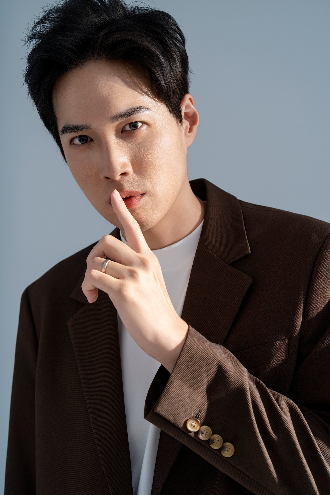
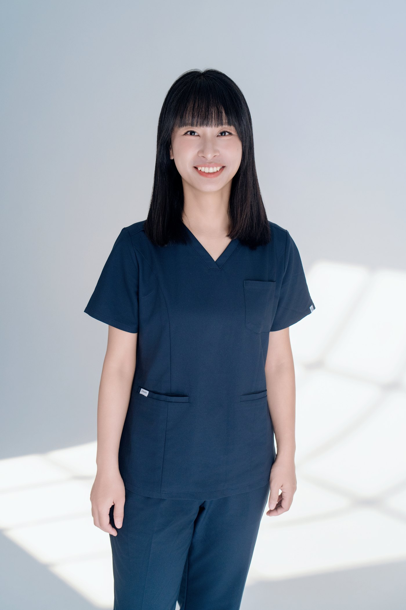
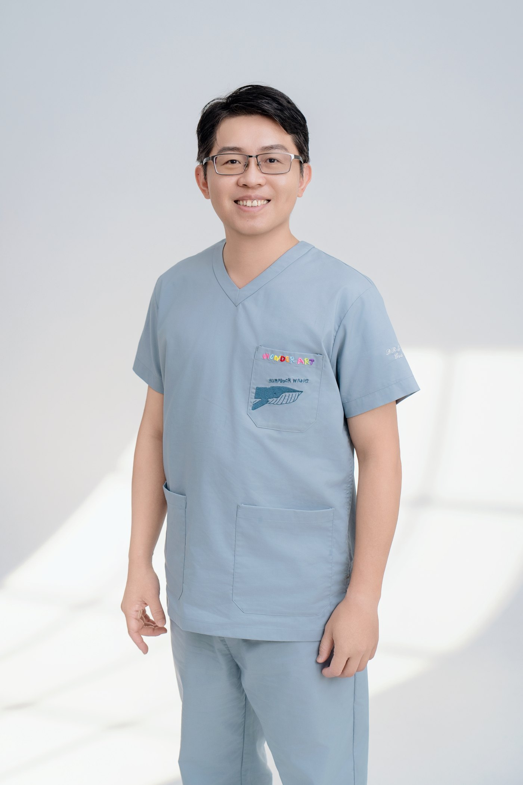
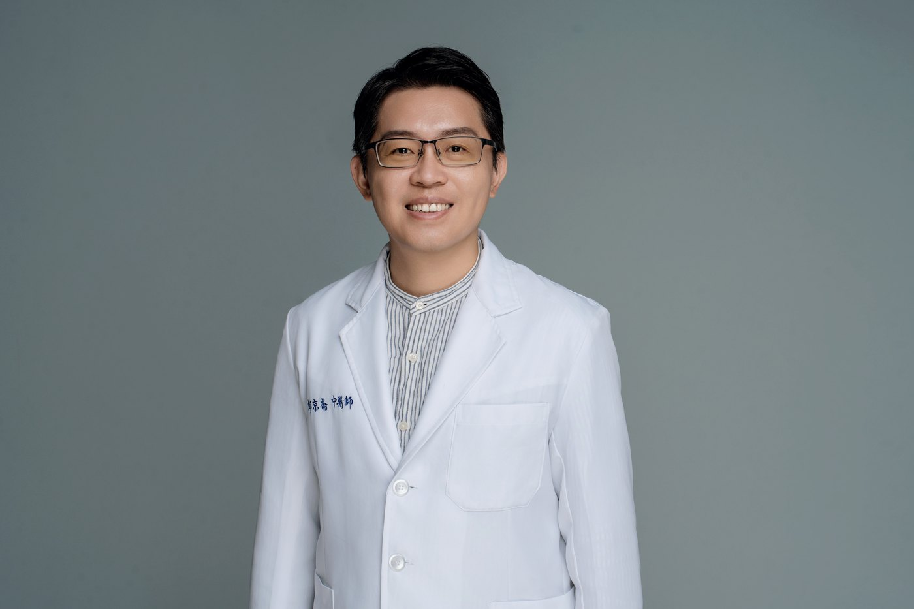

醫師形象照，是放在診所官網醫師介紹、掛號頁、Google 商家、衛教文章與講座資料上的人物照片。病人在真正見到醫師以前，照片會和姓名、學經歷、職稱與診所公開資訊一起被看見。
先給準備拍攝的人：價格、張數與基本準備
CHUN.EN 的品牌／職業形象照拍攝 NT$20,000 起，起始內容為 1 套造型、精修 3 張，含妝髮、拍攝場地、當日選片與雲端交件；精修照片加挑每張 NT$1,000。
安排妝髮請素顏抵達，妝髮約 1.5 至 2 小時，服裝依方案造型數準備。交件標準為拍攝後 2 個月內；如果講座或媒體有急件需求，再依當次需求確認急件安排。
如果照片同時要用在診所官網、掛號頁、講座或媒體資料，拍攝前先列出主要版位，再決定白袍、其他服裝與需要的構圖。
白袍直接披在當天的服裝外面拍，不另外算一套造型。
醫師為什麼也需要拍形象照？
最近一位來找我們的醫師，主要的訴求是想改變。他不想只待在診間，希望外在呈現也跟著調整，未來有機會走出診間，接觸社群與不同類型的合作。
他的另一個困擾是，不擅長打扮，也不知道髮型與服裝怎麼選。照片之後要對外使用，但他一開始也說不清楚照片該呈現什麼狀態，更不知道手上缺哪些畫面。
所以那次規劃，我們先一起釐清照片之後會用在哪裡，再往回決定服裝、妝髮與畫面版本。當時優先考慮的是 IG、Facebook 與電子名片。
醫師形象照要不要穿白袍？
CHUN.EN 拍醫師形象照時，會保留一組白袍版本作為備用。白袍能清楚交代醫療身分，但不能替醫術背書。診所官網、醫藥講座、媒體資料或合作素材，都可能需要這類畫面；日常社群與個人品牌內容，再搭配其他服裝版本。

白袍內搭可以有不同方向。需要較正式的畫面，可以搭襯衫與領帶；需要更接近臨床情境時，也可以穿刷手服。
一項在義大利、日本、瑞士與美國 20 家醫療院所、9,171 位病人參與的研究發現，各國評分最高的穿著都含白袍；但急診醫師與外科醫師，評分最高的是刷手服。這些研究沒有台灣樣本，所以不把它直接寫成台灣醫師的固定拍攝公式。
白袍本身也是有歷史的醫療符號。醫學史資料指出，19 世紀末以前醫師多穿黑色正式服，後來才逐漸改穿白袍。不過白袍也不是每個科別都適用，小兒科與精神科醫師一般不穿，為的是減少病人的緊張感。


不同科別，拍攝方向怎麼調整？
科別會影響畫面，但不需要把每個科別固定成一種表情或風格。
例如，兒科案可能更重視親近、清新與溫和；神經外科等需要傳遞高度專業與決策份量的情境，畫面可以更沉穩。真正要一起看的，是照片會用在哪裡、主要面對誰，以及醫師本人想呈現的狀態。
2025 年一篇整理 28 項研究的系統性回顧也發現，不同科別對服裝的偏好並不相同：皮膚科、神經外科與眼科偏好白袍，麻醉科與腸胃科偏好刷手服。
女醫師看起來太年輕，怎麼處理？
在我們的案子裡，女醫師比較常擔心的是看起來太年輕，怕病人因此覺得她經驗不夠、專業度不足。
處理方向不是刻意把人拍老，而是看服裝、髮型、妝感、表情與姿勢能不能讓她現在的狀態更完整地被看見。
國外研究關注的是另一種狀況。《JAMA Network Open》2021 年一項研究，請 487 位美國民眾看男女模特兒穿相同醫師服裝的照片。某些條件下，女性模特兒更常被誤認為醫技人員或醫師助理。這項研究沒有台灣樣本，所以本文只把它當成「身分可能被誤讀」的提醒，不把它當成台灣女醫師的固定情況。
醫師形象照的表情與姿勢
醫師第一次站到鏡頭前，我們經常先看到兩種自然反應：雙手交叉在胸前，或把手放進白袍口袋。但這兩個動作不需要變成醫師形象照的標準姿勢。
真正會影響站姿的，包括身形、科別、服裝與白袍版型。白袍的長度、肩線、口袋位置不同，手放的位置也會跟著調整。
表情同樣會影響第一眼的感受。Hehman 等人 2015 年的研究發現，同一個人的不同照片，對意圖類評價的變動比能力評價更大；另一項中國平台的觀察資料裡，笑容也和線上轉線下就診比例呈相關。後者只能說兩者相關，不能說笑容造成就診。
眼鏡怎麼處理？
如果醫師平常能接受隱形眼鏡，拍攝時可以改戴；如果需要保留平常戴眼鏡的樣子，則從燈位、角度或鏡框處理反光。
CHUN.EN 也備有無鏡片鏡框，讓需要眼鏡造型的人保留平常的辨識度，同時避免鏡片反光擋住眼神。

白袍與其他服裝穿上前也會先整燙，避免皺摺在棚燈下被放大。
診間實景拍，還是進棚拍？
兩者處理的問題不同。
診間實景的優點是醫療情境清楚；限制是空間、原有照明、器材、文件與拍攝時段都要一起處理。棚拍的光線、背景與構圖比較容易控制，同一間診所的醫師分次拍攝時，也比較容易維持一致。
衛福部〈醫療機構接受媒體採訪注意事項〉對病人肖像有明確規範，但形象照拍攝和媒體採訪不是同一種情境，不能直接把該規範當成形象照拍攝規則。
【待熟醫療法者確認：診間實景拍攝時，病人、病歷、看診螢幕與個資入鏡的正式法規邊界。對外稿確認前只保留「拍攝時避免病人與可辨識資料入鏡」的實務建議。】
想在自己的診間拍，可以依專案安排；實際時段、場地與外出條件另行確認。
男醫師拍形象照需要化妝嗎？
CHUN.EN 的品牌／職業形象照本身含妝髮，所以男性同樣會做拍攝用的妝髮整理。
目的不是把妝感做重，而是讓眉型、膚色與髮型在棚燈下維持完整。若把所有整理都留給後製，修圖幅度會變大，也和 CHUN.EN「不過度磨皮、不改變輪廓」的修圖原則相反。
醫師形象照拍完用在哪裡？
實際常見的使用位置包括：
- 診所官網與醫師經歷頁
- 講座海報
- 電子名片
- Facebook、短影音平台與其他社群頭像
- 媒體資料
- 品牌或醫療相關合作素材
用途越多，越需要在拍攝前先確認版位。講座海報要考慮留字空間與橫直比例；社群頭像則要在縮小後仍能辨識本人。
一位牙醫師，拍完形象照之後
有一位男牙醫個性比較內向，來找我們之前，在網路上很少出現，社群主要放治療作品，看不到他本人。
那次服務也包含穿搭規劃。拍攝之後，他開始有一組能放在社群與公開場合使用的人物照片，參加活動時也比較願意露臉；穿搭規劃則讓線上照片與線下出席時的狀態比較一致。
後來他陸續接到口腔保健品牌與醫學講座的邀約。這些邀約不能直接歸因於形象照。 能確認的是，在那之後他有了更多可使用的人物素材，也更有自信地出席各種公開場合。
【待 Zoey：若邀請方真的曾說「形象比較討喜、比較容易接觸客群」，確認為對方原話後再補，不自行推論。】
病人在見面之前，已經開始判斷
台灣一項 1,250 人的全國代表性電話調查發現，47% 的受訪者會用 Google 搜尋或社群媒體評價醫師，27% 表示曾根據這些評價決定就醫。
經濟學也用「信任品」討論醫師等專家服務的資訊問題：消費者需要專家判斷問題，但很難在事前完整評估服務品質。
另外，Willis 與 Todorov 2006 年的實驗顯示，只看一張陌生人的臉 100 毫秒，就足以形成和不限時間觀看具有高度一致性的第一輪評價。這項實驗看的是一般人的臉，不是醫師形象照。
醫療廣告與官網資訊，有哪些邊界？
醫療法第 85 條列出醫療廣告可登載的事項，和醫師本人直接相關的包括姓名、性別、學歷、經歷與醫師／專科醫師證書字號。
第 86 條與衛福部相關函釋，另外限制部分宣傳方式與用語，例如「最專業」「保證」「唯一」等最高級用語、特定用途外的治療前後比較影像，以及部分促銷方式。
醫療機構在網路上可以提供的資訊範圍比一般廣告更廣，但仍須由醫療機構對內容正確性負責。
對 CHUN.EN 來說，這一段和影像工作的交集很單純：照片、職稱、學經歷與旁邊的文字要彼此一致；專業醫療用語仍由醫師本人判斷。
見面之後，病人手上的依據變多
《美國醫學期刊》2026 年的 DRESS 研究，讓 5 位住院病人的主治醫師輪流穿「傳統服裝加白袍」與「刷手服不加白袍」，再請 274 位病人在實際相處後評估信任。兩種穿著的信任分數沒有差異。
另一篇 2015 年系統性回顧也發現，在看診之後才調查的研究裡，穿著影響比較少被測到。
這些研究測的是穿著，不是形象照，因此不能延伸成「見面後形象沒有用」。比較穩妥的理解是：真正開始互動後，病人手上的判斷資訊變多，不再只靠照片與公開資料。
CHUN.EN 的完整流程與交付
- 流程：需求確認 → 拍攝前準備 → 妝髮與拍攝 → 當日選片 → 精修交件
- 交付：附影像部署模擬器，可預覽照片放進官網、LINE、Facebook、Instagram、LinkedIn 與簡報的樣子，並輸出裁切完成的檔案
- 修圖：處理膚況、碎髮、服裝與畫面細節，不做過度磨皮，也不改變輪廓
如果同時需要定位、服裝策略、多種版位與多組畫面，可再評估商業視覺整合企劃。服務據點位於台中勤美商圈；部分服務可安排外縣市，實際依內容與地點確認。
方案內容見 C.photos 服務頁。
常見問題
醫師形象照多少錢？+
醫師形象照一定要穿白袍嗎？+
醫師形象照的姿勢怎麼擺？+
男醫師拍形象照需要化妝嗎？+
醫師可以把形象照用在廣告上嗎？+
拍醫師形象照要準備什麼？+
醫師形象照多久可以拿到照片？+
不在台中執業，也可以拍嗎？+
本文從形象與影像應用的角度整理，不構成醫療、法律或法遵意見。
參考資料
- 醫療法第 9、84、85、86、87、103、104 條，全國法規資料庫（修正日期 115 年 5 月 15 日）。 https://law.moj.gov.tw/LawClass/LawAll.aspx?pcode=L0020021
- 醫療機構網際網路資訊管理辦法第 2、6 條，全國法規資料庫。 https://law.moj.gov.tw/LawClass/LawAll.aspx?pcode=L0020165
- 衛生福利部 105 年 11 月 17 日衛部醫字第 1051667434 號令（行政院公報第 22 卷 216 期）；衛生福利部 103 年 1 月 24 日衛部醫字第 1031660048 號公告。衛福部醫療廣告管理專區： https://dep.mohw.gov.tw/DOMA/cp-2708-38120-106.html
- 行政院衛生署 90 年 11 月 1 日衛署醫字第 0900071404 號公告：醫療機構接受媒體採訪注意事項。衛生福利法規檢索系統： https://mohwlaw.mohw.gov.tw/
- Chen, T.-T. 等 (2026). Why patients still turn to Google: cross-national comparison of physician review use and its implications for quality disclosure in Taiwan. International Journal for Quality in Health Care, 38(1). https://pubmed.ncbi.nlm.nih.gov/41392741/
- Dulleck, U., & Kerschbamer, R. (2006). On doctors, mechanics, and computer specialists: The economics of credence goods. Journal of Economic Literature, 44(1), 5–42. https://www.aeaweb.org/articles?id=10.1257/002205106776162717
- Willis, J., & Todorov, A. (2006). First impressions: Making up your mind after a 100-ms exposure to a face. Psychological Science, 17(7), 592–598. https://pubmed.ncbi.nlm.nih.gov/16866745/
- Hehman, E., Flake, J. K., & Freeman, J. B. (2015). Static and dynamic facial cues differentially affect the consistency of social evaluations. Personality and Social Psychology Bulletin, 41(8), 1123–1134. https://pubmed.ncbi.nlm.nih.gov/26089347/【審稿用，上站前移除】
補充（09/24 主對話親查）：研究者所屬的 NYU 官方新聞稿〈Changing Faces: We Can Look More Trustworthy, But Not More Competent〉明寫可信度（trustworthiness）的臉部線索容易改變、能力線索較不易改變，https://www.nyu.edu/about/news-publications/news/2015/june/changing-faces-we-can-look-more-trustworthy-but-not-more-competent.html 。正文「可信度相關的第一眼評價」可據此保留，出處寫成「研究者在發表時的說明」，不再標推論。 - Zhang, X. 等 (2026). The magic of first impressions: Do facial displays on online platforms affect users' offline conversion rate? PLoS One, 21(6), e0347346. https://pubmed.ncbi.nlm.nih.gov/42234694/
- Tudtud-Hans, L. 等 (2026). Does what doctors wear really matter? The DRESS prospective study on patient trust. American Journal of Medicine, 139(7), 922–930. https://pubmed.ncbi.nlm.nih.gov/41802532/
- Petrilli, C. M. 等 (2015). Understanding the role of physician attire on patient perceptions: a systematic review of the literature. BMJ Open, 5(1), e006578. https://pubmed.ncbi.nlm.nih.gov/25600254/
- Hochberg, M. S. (2007). The doctor's white coat: an historical perspective. Virtual Mentor (AMA Journal of Ethics), 9(4). https://journalofethics.ama-assn.org/article/doctors-white-coat-historical-perspective/2007-04
- Houchens, N. 等 (2022). International patient preferences for physician attire: results from cross-sectional studies in four countries across three continents. BMJ Open, 12(10), e061092. https://pubmed.ncbi.nlm.nih.gov/36192090/
- Kim, J. 等 (2025). Patient perception of physician attire: a systematic review update. BMJ Open, 15(8), e100824. https://pubmed.ncbi.nlm.nih.gov/40796220/
- Xun, H. 等 (2021). Public perceptions of physician attire and professionalism in the US. JAMA Network Open, 4(7), e2117779. https://pubmed.ncbi.nlm.nih.gov/34328503/